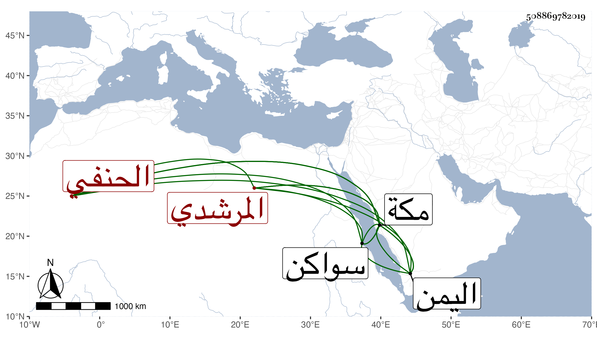

0902Sakhawi.DawLamic.ITO20230111-ara1.EIS1600.508869782019
Biography ID: 508869782019
954
علي الأصفر بن محمد بن أحمد بن حسن النور أبو الحسن الحنفي أخو الذي قبله وأمه خديجة ابنة إبراهيم بن أحمد بن أبي بكر المرشدي . ولد في أحد الجمادين سنة ثمان وتسعين وسبعمائة بمكة ومات أبوه وهو صغير في سنة إحدى فكفله عمه العفيف عبد الله واعتنى به خاله الجمال المرشدي فأحضره على الشمس ابن سكر وابن صديق بل وسمع على ثانيهما والشهاب بن مثبت والتقي الزبيري والزين المراغي والمجد اللغوي وآخرين وأجاز له إبراهيم بن أحمد بن عبد الهادي والشهاب أحمد بن أقبرص وأبو حفص البالسي والمحب بن منيع وابن قوام وفاطمة وابنة ابن المنجا وفاطمة ابنة ابن عبد الهادي وجماعة ونشأ فقيرا فسافر في التجارة إلى سواكن وغيرها من بلاد اليمن مرارا إلى أن أثرى وكثر ماله واستقر في نظر رباط السدرة ورباط كلالة والميضأة المنسوبة لبركة في أواخر سنة ثلاث وأربعين فعمر ذلك عمارة متقنة وبذل فيها جملة من ماله قرضا ثم ولي التكلم في الجشيشة الجمالية بمكة في أثناء سنة أربع وخمسين وحدث وسمع منه الفضلاء وقرأت عليه بمكة أشياء وشكرت سيرته فيما تكلم فيه . مات في مغرب ليلة الأحد سابع عشري جمادى الأولى سنة ست وستين رحمه الله وهو والد زينب وفاطمة أم عبد الغني وعلي ابني أبي بكر المرشدي .
